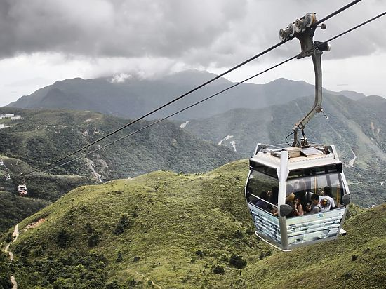
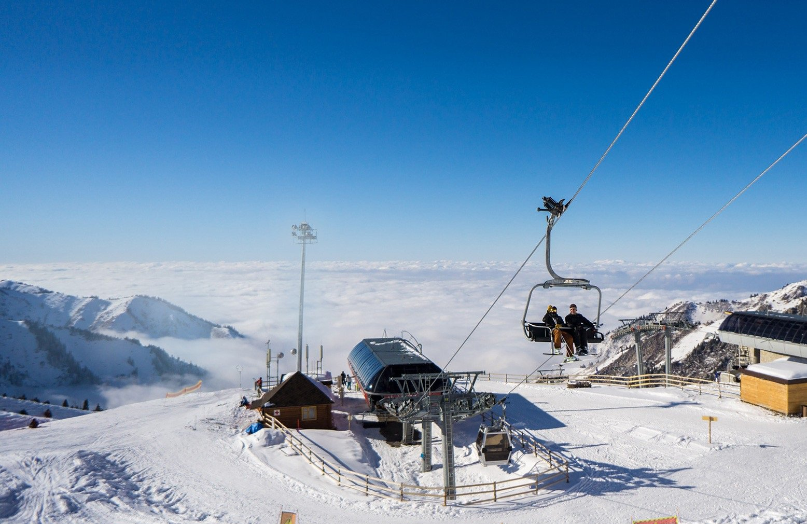

Канатная дорога Алма-Аты
Канатная дорога «Медео — Шымбулак» — уникальная транспортная система, соединяющая город с высокогорным спортивным комплексом «Медео» и горнолыжным курортом «Шымбулак». Это не только способ передвижения, но и популярная туристическая достопримечательность с захватывающими видами на Заилийский Алатау.
Открыта в 2011 году после масштабной реконструкции. Протяжённость первой очереди — 4 572 метра, что делает её одной из самых длинных канатных дорог в мире. Верхняя точка всей системы достигает 3 200 метров над уровнем моря.
О канатной дороге
📅 Дата открытия
2011 год
Канатная дорога открыта после масштабной реконструкции, приуроченной к зимним Азиатским играм 2011 года. Строительство велось с июля 2007 года австрийской компанией Doppelmayr.
📍 Маршрут
Нижняя станция: «Медео» (1691 м над уровнем моря)
Верхняя станция (1-я очередь): «Шымбулак» (2260 м)
Высшая точка системы: Талгарский перевал (3200 м)
Канатная дорога работает круглый год, обеспечивая доступ к горнолыжным трассам зимой и к живописным видам летом. Система состоит из нескольких очередей с пересадками на промежуточных станциях.
История создания
Начало строительства
В июле 2007 года началось строительство современной гондольной канатной дороги австрийской компанией Doppelmayr.
Технический запуск
23 декабря 2010 года состоялся массовый технический проезд по канатной дороге.
Официальное открытие
Канатная дорога официально открыта к зимним Азиатским играм 2011 года. Система включает несколько очередей: «Медео — Шымбулак» (Combi-1) и далее до средних и верхних станций (Combi-2).
Современное состояние
Канатная дорога — одна из главных туристических достопримечательностей Алма-Аты и одна из самых длинных канатных дорог в мире (третье место по протяжённости).
Технические характеристики
| Параметр | Значение |
|---|---|
| Год открытия | 2011 (после реконструкции) |
| Протяжённость (1-я очередь) | 4 572 м |
| Перепад высот (1-я очередь) | 569 м (от 1691 до 2260 м) |
| Высшая точка системы | 3 200 м (Талгарский перевал) |
| Тип | Гондольная (Doppelmayr) |
| Количество очередей | 2 (Combi-1 и Combi-2) |
| Время в пути (1-я очередь) | 14–15 минут |
| Пропускная способность | до 2000 человек в час |
| Скорость | 5–6 м/с |
| Количество кабин | 114 восьмиместных |
| Вместимость кабины | 8 человек |
| Производитель | Doppelmayr (Австрия) |
Маршрут и достопримечательности
Нижняя станция — Медео
- Высокогорный спортивный комплекс «Медео»
- Самый высокогорный каток в мире (1691 м)
- Уникальная ледовая арена
- Плотина Медео — защита от селей
Верхние станции — Шымбулак
- Горнолыжный курорт «Шымбулак» (2260 м)
- Средняя станция (2860 м)
- Верхняя станция — Талгарский перевал (3200 м)
- Горнолыжные трассы различной сложности
- Панорамный вид на Заилийский Алатау
Вид из кабины: Во время подъёма открываются захватывающие панорамы на город Алма-Ату, Заилийский Алатау и ущелье реки Малая Алматинка.
Интересные факты
Одна из длиннейших в мире
Протяжённость 4 572 метра выводит канатную дорогу на третье место в мире по длине пролёта.
Круглогодичная работа
Работает 365 дней в году — зимой для лыжников, летом для туристов.
Киносъёмки
Канатная дорога и окрестности использовались для съёмок советских фильмов, включая «Игла» с Виктором Цоем.
Спортивные события
Принимала участников и гостей зимних Азиатских игр 2011 года.
Панорамный вид
С верхней станции открывается вид на город Алма-Ату и пики Заилийского Алатау высотой более 4000 метров.
Популярность
Ежегодно канатной дорогой пользуются сотни тысяч туристов и местных жителей.
Фотогалерея

Вид на канатную дорогу и горы Заилийского Алатау.

Горнолыжный курорт «Шымбулак» зимой.
Нажмите на фото для увеличения
«Канатная дорога в Алма-Ате — это уникальное сочетание инженерной мысли и природной красоты. Поднимаясь над городом, ты словно попадаешь в другой мир — мир величественных гор и белоснежных вершин».